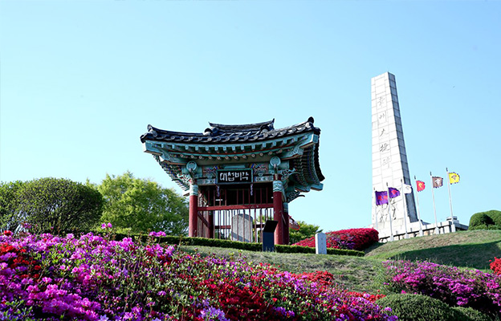
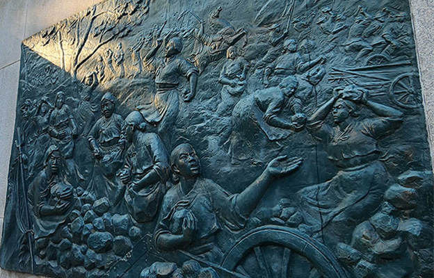
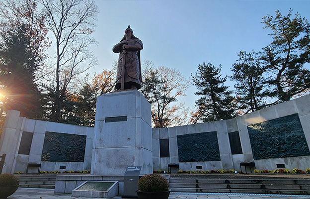

행주산성 이야기
선조들의 숭고한 정신과 역사적 기록을 만나보세요.
幸州之戰 權慄以數千兵拒倭
十餘萬 矢盡則以石擊之
婦女負石助戰 遂大破之
- 행주산성역사
- 행주대첩 이야기
- 권율 장군 이야기



행주대첩 승리로 조선을 지켜낸 권율 장군
1592년 4월 임진왜란이 일어나자 전라도 광주목사로 전라도 관찰사 이광과 방어사 곽영이 4만여 명의 군사를 모집할 때 그 휘하의 장수가 되었다. 이광의 군대가 한양 수복을 위하여 북진하면서 많은 군사를 잃자 권율 장군은 군사를 이끌고 광주로 퇴각하여 남은 군사와 의병 1천 명을 모아 다시 북진하여 전주로 쳐들어오는 왜적을 ‘이치고개’(충청남도 금산)에서 물리쳤다. 이치대첩은 임진왜란 당시 패배만 거듭하던 조선군이 처음으로 크게 승리한 육전으로 그 공으로 권율 장군은 전라도 순찰사가 되었다.